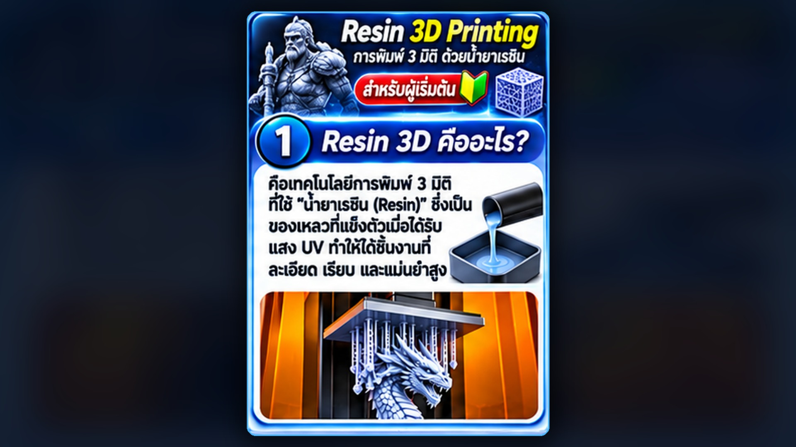

เลือกหัวข้อที่ต้องการรับชม
เทคโนโลยีที่เปลี่ยน
วิธีสร้างและผลิต
เลือกชุดสไลด์เพื่อเริ่มนำเสนอ

3D PRINTING Resin 3DPrinting รู้จักเครื่องพิมพ์เรซิน ตั้งแต่หลักการทำงานจนถึงความปลอดภัย 10 สไลด์ · สำหรับผู้เริ่มต้น
 INDUSTRIAL IOT
IoT สำหรับ
INDUSTRIAL IOT
IoT สำหรับโรงงาน ใช้ข้อมูลจากเครื่องจักรเพื่อติดตามสภาพและวางแผนดูแล 15 สไลด์ · เทคโนโลยีอุตสาหกรรม